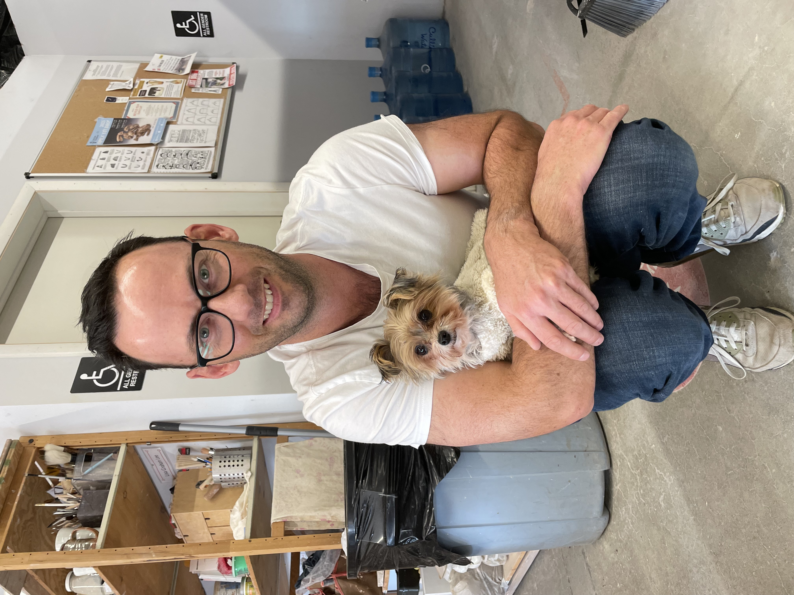

Brand & design system · v0.1 · September 2026
Jon Martin Consulting
The standards for a one-person product and web practice serving working artists. Built on Direction D, Person Led — the structure taken from thoughtbot, where the senior person is the product and the proof is named clients with real outcomes.
Logo
A square JM mark beside the name. The mark is the only element that survives at small sizes, which is why it carries the colour and the wordmark does not.
Lockups
Consulting
Primary. Default for web headers, documents, decks.
Stacked. Narrow columns, social profiles, proposal covers.
Wordmark alone. Where the mark would be redundant — invoice footers, signatures.
Monogram alone. Avatars, favicons, stamps on client work.
Clear space & minimum size
Clear space = the height of the mark's cap "M" on all four sides. Nothing enters it — no text, no rule, no image edge, no other logo.
24px
16px
140px lockup
Minimums. Mark: 16px screen, 6mm print. Full lockup: 140px screen, 32mm print. Below 140px the lockup loses the wordmark and the mark stands alone.
Colour variants
Consulting
Ink blue on paper — default
Consulting
Reversed on ink
Consulting
Reversed on blue
Consulting
Single ink — fax, stamp, engraving
Misuse
✕ Never stretch or condense
✕ Never recolour outside the palette
✕ Never rotate or tilt
✕ No shadows, bevels or glows
✕ Never re-typeset the wordmark
✕ Never crowd the clear space
Colour
Warm paper, near-black ink, one professional blue, one umber for attention. Four colours doing four jobs — the blue is the only saturated colour on any screen, and it is never decorative.
Core palette
Contrast — measured, not assumed
Every ratio below is calculated against WCAG 2.1. Two values were changed because they failed: Ink 3 was #83827E at 3.63:1 on paper, which fails AA for body text, and its dark-mode counterpart failed on raised surfaces.
| Foreground | Background | Ratio | Body text | Use |
|---|---|---|---|---|
| Ink #1A1A1A | Paper #FAF8F4 | 16.41 | AAA | All body copy and headings |
| Ink 2 #4F4F4E | Paper #FAF8F4 | 7.73 | AAA | Secondary prose |
| Ink 3 #6E6C67 | Paper #FAF8F4 | 4.94 | AA | Captions, labels — not long-form |
| Ink 3 #6E6C67 | Shade #F1EEE7 | 4.53 | AA | Captions on shaded bands |
| Ink Blue #1E4A8C | Paper #FAF8F4 | 8.20 | AAA | Links at any size |
| Umber #A8542C | Paper #FAF8F4 | 4.99 | AA | Warnings — never body text |
| Paper #FAF8F4 | Ink Blue #1E4A8C | 8.20 | AAA | Reversed on the mark, buttons |
| Paper #FAF8F4 | Ink #1A1A1A | 16.41 | AAA | Reversed on dark bands |
| Paper #FAF8F4 | 3.63 | FAILS | Replaced — do not use |
Proportion
If the blue is over roughly a tenth of a screen it has stopped being an accent. Umber should be rare enough to be startling.
Typography
Bitter for anything that names something; Public Sans for anything that explains it. A slab headline against a plain sans body is what makes this read as a practice rather than a publication — and it is the deliberate difference from the three serif-bodied directions.
Scale
52 / 54.6 · −0.028em
clamp(30px, 5.2vw, 52px)
38 / 41 · −0.025em
32 / 35.8 · −0.022em
25 / 28.75 · −0.02em
20 / 24 · −0.015em
18.5 / 28.7
17 / 27.2 · 60–70ch measure
15.5 / 23.25
13.5 / 19.6 · Ink 3
13 / 16.9 · 0.09em · caps
Rules
Measure
Body copy 60–70 characters. Lead paragraphs no wider than 46ch. Never justify; never hyphenate headlines.
Numerals
Tabular numerals wherever figures stack — metrics, invoices, contrast tables. Proportional everywhere else.
Tracking
Negative tracking increases with size. Labels are the only positive tracking in the system, at 0.09em.
No monospace
Deliberately absent. Mono labels read as receipts and spec sheets — a retail tell, not a consulting one.
Grid & spacing
An 8pt base. Every margin, padding and gap in the system is a multiple of it, which is what keeps independently built pages looking related.
Spacing scale
Twelve columns
Container 1100px max, 24px gutters, side padding clamp(18px, 4vw, 48px). Breakpoints: 480 / 768 / 1024 / 1280. Below 768 everything collapses to one column — no two-column body text on a phone, ever.
Layouts
Six page types. The shared rule: left-aligned, hairline-separated, no cards, and text links rather than buttons except for the single booking action.
Home
Portrait right, claim left, then work. One booking link.
Case study
Client, outcome, pills, one full-width image, the story.
Service detail
What it is, what you get, what it costs you in time.
Article
Single column, 66ch, pull quote on the blue rule.
About
The portrait does the work. First person, short.
Contact
Three fields. Anything longer loses the booking.
Imagery
This section is art direction, and it is mostly a specification rather than a library. One usable asset exists in this repo; everything else is still to be shot. Crop ratios, framing, treatment rules and a shot list are below.
Three subjects, in priority order
16:11
1. The work itself. The hero. Fills two-thirds of frame, weighted left or right so the headline has somewhere to sit.

2. The maker working. Hands in frame, eyes usually not on camera, mid-task. The asset shown does not meet this spec — it is posed, looking at camera, holding a dog. Good for About; not the lead frame.
1:1
3. The workspace. Context, texture, mess. Square for grids and avatars.
Treatment
Do
Natural window light. Warm-neutral white balance matched to the paper. Real working mess left in frame. Hands, tools and material visible. Colour straight out of camera, lightly graded.
Don't
No flash. No filters, duotones or brand-colour overlays. No crushed blacks. No stock photography of any kind. Never photograph a client's work against a background that fights its glaze or pigment.
The rule that decides close calls: the client's work is always the hero. If a photograph makes Jon look more impressive than the artist, it is the wrong photograph for this brand.
Shot list
4:5, at the wheel or at the desk mid-task. Not a headshot. This is the single blocking asset — Direction D does not function without it.
16:11, on a real device or cleanly flat. One per case study.
Ceramics on a shelf, a painting on a wall, a bottle on a bench. Establishes who this is for faster than any headline.
1:1 texture frames for grid fill and social. Cheap to shoot, endlessly reusable.
One environmental frame for the About page.
What already exists in this repo
| File | What it actually shows | Meets the spec? |
|---|---|---|
| public/jonny-pottery-studio.jpg | Posed, crouching in the studio with a dog, eyes to camera | Partial — About only |
| public/jonny-headshot.jpg | Studio headshot | No — direction rejects headshots as lead |
| public/jonny-couple.jpg, jonny-hiking.jpg, jonny-gdc.jpg | Personal and conference photography | No — off-brand for this practice |
| — | Client work, client sites, hands and material | Missing entirely |
Net: shot 01 is still the blocking asset. Nothing currently in the repo is a portrait of Jon working.
Iconography
Line only, drawn on a 24px grid with a 1.75px stroke, round caps and joins, no fills and no corner radius beyond 2px. Icons label, they never decorate — if a heading works without one, it does not get one.
Eight is the whole set. A growing icon library is a sign the page is explaining itself with pictures instead of words.
Components
Deliberately few. There is no card component — the reference consultancies use none, and cards were what made the earlier rounds read as eCommerce.
Links & actions
The default. Carries almost every action on the site.
Book a callSee the work
One filled button per page, reserved for booking. Ghost is secondary and rare.
Discipline pills
Growth StrategyE-commercePricing
Outline only, never filled. They are a promise about what you take on, so the list stays short and true.
Form field
Label above, always visible. No placeholder-only fields — they fail for everyone who stops to think.
Quote
He told me the thing I didn't want to hear in the first twenty minutes.
Attribution required — name, role, permission
A quote without attribution never ships.
Motion
Motion confirms an action happened. It never introduces content — nothing on a page waits for a scroll to become visible.
| Token | Duration | Easing | Used for |
|---|---|---|---|
| --motion-micro | 120ms | cubic-bezier(.2,.6,.2,1) | Hover, focus, link underline weight |
| --motion-base | 200ms | cubic-bezier(.2,.6,.2,1) | Disclosure, field states, menus |
| --motion-enter | 320ms | cubic-bezier(.16,.8,.3,1) | Page-level transitions only |
Required: every transition sits behind @media (prefers-reduced-motion: reduce). No parallax, no scroll-jacking, no counters that tick up — a number that animates is a number you are performing rather than reporting.
Voice & tone
First person, direct, slightly blunt. You are a working maker who also builds software — the credibility comes from the biography, so the copy never has to claim warmth.
Four rules
Say the hard thing early
The proposal that names the real constraint in the first paragraph is the one that wins. Lead with it.
Nouns over adjectives
"A thousand finished paintings" beats "an extensive body of work" every time.
Never announce the virtue
Show that you serve people who have nobody. Saying it out loud kills it on contact.
Quote the client
Their question, in their words, is better than any headline you could write for them.
In practice
Write this
“Most artists I meet don't have a website problem. They have a hundred finished pieces and no way for anyone to find them.”
Not this
“Let's tell your story and elevate your brand for the modern creative entrepreneur.”
Write this
“Thirty minutes on a call. You'll leave with answers you can act on the same day.”
Not this
“Our discovery process is designed to unlock your unique potential.”
Applications
Where the system actually gets used. Every one of these is a real artefact you will need in the first month of trading.
Consulting
Jon Martin
jonalexjames@gmail.com · San Francisco
Business card, front. 85 × 49mm.
Business card, reverse. Mark reversed on Ink Blue.
Email signature. Text only — no image, so it survives every client.
Proposal cover and deck title slide.
Deck content slide. Label, claim, one line of support.
Invoice 0014
Due 30 Sept 2026
Invoice header. Tabular numerals; amount left blank because pricing is unset.
Jon Martin Consulting
Square avatar — the mark, never a cropped portrait
Social avatar. The monogram survives at 32px; a cropped face does not.
You get me. Not an agency.
Jon Martin Consulting
Social banner. One claim, reversed on Ink.
Tokens
Copy this into the build. These are the exact values every example on this page is drawn from — including the two corrected for contrast.
Still open
Named, not filled. A design system that hides its gaps is worse than one that has them.
There is no photography. Section 06 is a specification and a shot list, not a library. The portrait is the blocking asset — Direction D does not function without it.
The logo is set in a licensed web font. Bitter at 700 is a proposal for proportion. A real wordmark should be drawn and outlined, so it stops depending on a font load.
Domain still unchecked. Everything here assumes the name is available; it has never been tested.
No pricing exists, so the invoice and the self-serve tier both have blanks. A self-serve offer usually needs a published number to be self-serve at all.
No testimonial is attributed. Every reference consultancy names the person. One of yours is permanently blocked by a stealth client.
No success metric has been set for the rebrand — still true, now across a whole design system. There is nothing to judge this against in six months.
Print colour is unspecified. The hex values have no CMYK or Pantone equivalents, which the business card and any printed proposal will need.
Jon Martin Consulting — brand and design system v0.1. Front-end prototype, no backend. Contrast ratios on this page were calculated, not estimated. Approvals are recorded per section and survive the session.